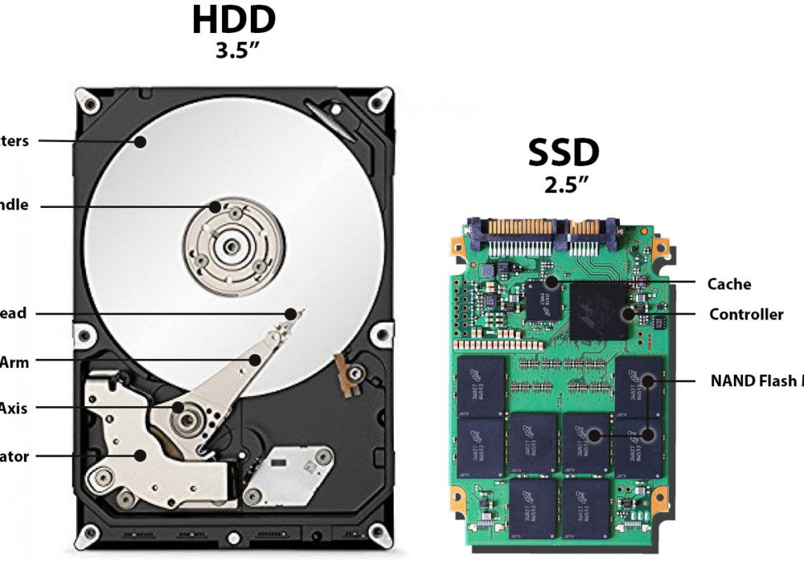
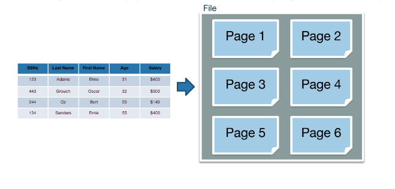

How databases physically read and write data; why the disk hierarchy defines everything

Every abstraction in a DBMS — relations, SQL queries, transactions — ultimately bottoms out in reads and writes to physical storage. The performance of almost every database operation is dominated by I/O cost, not CPU cost. This means that anyone who designs a database, writes queries, or tunes a system must understand how data is stored on disk.
The central tension in database storage is simple: processors operate at nanosecond scale; disks operate at millisecond scale. That is a six-order-of-magnitude gap. The buffer pool manager is the critical layer that bridges this gap by keeping frequently accessed pages in RAM.
| Level | Typical Size | Latency | Bandwidth | Volatile? |
|---|---|---|---|---|
| L1 Cache | 32–512 KB | ~1 ns | >100 GB/s | Yes |
| L3 Cache | 8–64 MB | ~10 ns | ~50 GB/s | Yes |
| DRAM (RAM) | 4–512 GB | ~100 ns | ~10–50 GB/s | Yes |
| NVMe SSD | 256 GB–8 TB | ~100 µs | 3–7 GB/s | No |
| SATA SSD | 256 GB–4 TB | ~200–500 µs | ~500 MB/s | No |
| HDD | 1–20 TB | 5–15 ms | 100–200 MB/s | No |
A random HDD read (~10 ms) takes roughly 10,000× longer than a DRAM read (~100 ns). Even on modern NVMe SSDs, random reads are 1,000× slower than DRAM. This means that reducing the number of page I/Os is the most powerful optimization available to a DBMS.
A spinning disk consists of one or more platters coated in a magnetic material. Each platter surface is divided into concentric tracks, and each track is divided into sectors (typically 512 bytes or 4 KB). The OS and DBMS read/write in units called blocks or pages, which are multiples of the sector size.
The time to read a random block on HDD has three components:
Sequential reads are much faster because seek time is paid only once for a long stream of contiguous blocks.
SSDs have no moving parts. Random reads are dramatically faster (~100–500 µs vs 10 ms on HDD). However, SSDs have asymmetric read/write performance: reads are fast, writes involve erasing an entire flash block (often 128–512 KB) before writing, making random writes slower. This asymmetry influences B+ tree and log-structured storage designs.
A DBMS never reads or writes individual tuples directly from disk. It always reads and writes pages (also called blocks). A page is the unit of transfer between disk and the buffer pool.
Typical page sizes are 4 KB, 8 KB, or 16 KB. PostgreSQL uses 8 KB by default; SQL Server uses 8 KB; MySQL InnoDB uses 16 KB. Larger pages mean fewer I/Os for sequential scans but more wasted I/O if you only need a few tuples from a page.
Each page contains a page header (page ID, free space pointer, number of records, checksum) and the actual record data. Records within a page are typically stored using a slotted page structure:
Slots grow from the top of the page; records are packed from the bottom. This allows records to be moved within the page (for compaction) without changing their record ID (RID = pageId + slotNum).
A record is uniquely identified by its RID = (pageId, slotNum). Index entries in B+ trees and hash indexes store RIDs to point to actual tuples. When a record moves between pages (e.g., due to an UPDATE that grows the record), the RID must be updated or a forwarding pointer left behind.
The buffer pool is a region of DRAM managed by the DBMS that caches recently accessed pages. It is divided into fixed-size frames, each the same size as a disk page. The buffer pool manager is responsible for:

Each frame in the buffer pool has two metadata fields:
| Policy | Evict | Good For | Bad For |
|---|---|---|---|
| LRU | Least Recently Used frame | General workloads, hot pages | Sequential scans (pollutes cache) |
| MRU | Most Recently Used frame | Repeated sequential scans | Random access patterns |
| Clock | Approximate LRU, uses a reference bit | Low overhead LRU approximation | Slightly less optimal than LRU |
| LRU-K | Page whose Kth most recent access is oldest | Mix of sequential and random access | Higher bookkeeping overhead |
LRU performs poorly for full table scans. A sequential scan reads every page once; LRU will evict previously cached hot pages to make room for scan pages that will never be needed again. Many systems use "MRU for sequential scans" or ring-buffer techniques to avoid this: scan pages are marked as "use once" and evicted immediately after use, preserving the hot working set.
The Clock algorithm approximates LRU without maintaining a full access-time list. Each frame has a reference bit. When a page is accessed, its reference bit is set to 1. The "clock hand" sweeps around frames:
We estimate query cost in units of page I/Os (ignoring CPU). The key parameters are:
| Operation | I/O Cost | Notes |
|---|---|---|
| Full table scan (heap) | B | Sequential, one pass |
| Index lookup (B+ tree) | log_d(B) + 1 | d = fill factor, log depth + leaf |
| Sort (external merge sort) | 2B · ⌈log_{B-1}(B/P)⌉ + B | Multiple passes over data |
| Simple nested loop join | B_R + B_R · B_S | Worst case, no index |
Pre-fetching: When the DBMS detects a sequential scan, it issues prefetch I/Os — reading the next N pages before they are requested. This hides disk latency by overlapping I/O with processing.
Write-ahead logging (WAL): Before a dirty page can be written back to disk, its log record must be written to the log on disk first. This ensures that crashes during a write can be recovered. We cover WAL in detail in L41.